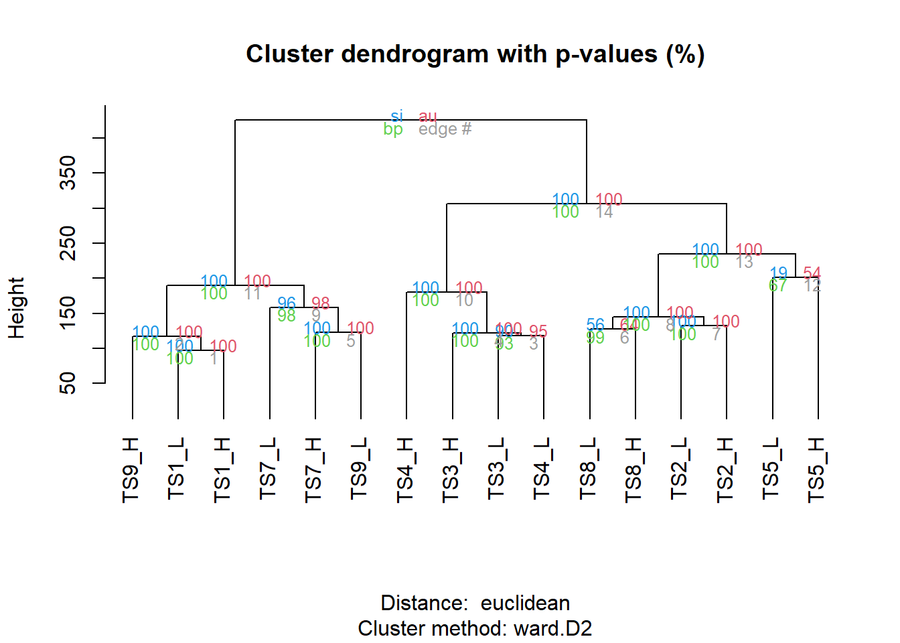
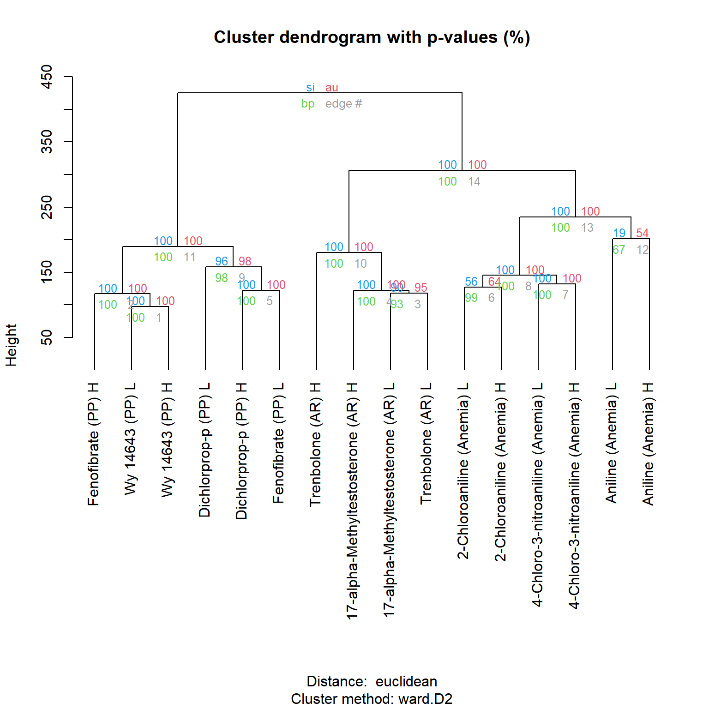

Bioactivity-based grouping
t-statistic grouping
We have finally made it to the grouping!
For the Michabo Health Science workflow grouping we use the t-statistic calculated from the previous sections.
let’s read in the combined t-stats calculated for each assay, test substance and dose for male rodents.
tstats <- read.csv(file.path(root, 'data/combined_male_tstats.csv'), row.names = 1)Now we vector normalise on each treatment condition using the
scale function which will divide each treated condition by
the square root of the sum of the squared t-statistics for all features
of that condition.
This is performed to attempt to minimise the impact of the “potency” of each test substance.
tstats_scaled <- scale(tstats, center=FALSE, scale=TRUE)Hierarchical Cluster Analysis (HCA) on t-statistics
The focus of our grouping will be using Hierarchical Cluster Analysis (HCA) on the t-statistics. See below for some general principals on HCA.

We will be using a package called pvclust to perform the
HCA which calculates some additional measures of confidence that we will
explore later
So let’s run the grouping with pvclust. Using Euclidean distance matrix and the ‘Ward.D2’ method for clustering (i.e. linkage method).
See the following link for further details on linkage methods).
{kind=link}
library(pvclust)
pvclust_res <- pvclust(tstats_scaled, method.dist="euclidean", method.hclust = "ward.D2", nboot=100)## Bootstrap (r = 0.5)... Done.
## Bootstrap (r = 0.6)... Done.
## Bootstrap (r = 0.7)... Done.
## Bootstrap (r = 0.8)... Done.
## Bootstrap (r = 0.9)... Done.
## Bootstrap (r = 1.0)... Done.
## Bootstrap (r = 1.1)... Done.
## Bootstrap (r = 1.2)... Done.
## Bootstrap (r = 1.3)... Done.
## Bootstrap (r = 1.4)... Done.plot(pvclust_res, c("si", "au", "bp"), hang=-1)
Unblinding - compound and mode of action details
| TS | Compound | CAS No. | MOA | Effect strength | Label name |
|---|---|---|---|---|---|
| TS1 | Wy 14643 | 50892-23-4 | Peroxisome proliferation (PP) | Strong | Wy 14643 (PP +++) |
| TS7 | Dichlorprop-p | 15165-67-0 | Peroxisome proliferation (PP) | Moderate | Dichlorprop-p (PP ++) |
| TS9 | Fenofibrate | 49562-28-9 | Peroxisome proliferation (PP) | Strong | Fenofibrate (PP +++) |
| TS3 | 17-alpha-Methyltestosterone | 58-18-4 | Androgen receptor activity (AR) | Strong | 17-alpha-Methyltestosterone (AR +++) |
| TS4 | Trenbolone | 10161-33-8 | Androgen receptor activity (AR) | Strong | Trenbolone (AR +++) |
| TS2 | 4-Chloro-3-nitroaniline | 635-22-3 | Anemia | Moderate | 4-Chloro-3-nitroaniline (Anemia ++) |
| TS5 | Aniline | 62-53-3 | Anemia | Moderate | Aniline (Anemia ++) |
| TS8 | 2-Chloroaniline | 95-51-2 | Anemia | Weak | 2-Chloroaniline (Anemia +) |

t-stat - HCA - unblinded
Lets do that again but this time with unblinded labelled columns
library(pvclust)
unblinded_names <- read.csv(file.path(root, 'data/unblinded_ordered_names.csv'), header = TRUE)
pvclust_res_unblind <- pvclust_res
unblinded_names_sorted <- unblinded_names[match(pvclust_res$hclust$labels, unblinded_names$test_substance_dose), ]
pvclust_res_unblind$hclust$labels <- unblinded_names_sorted$full_label
plot(pvclust_res_unblind, c("si", "au", "bp"), hang=-1)
Assessing confidence in the grouping hypothesis

Chemical grouping using structure only
Lets compare this with the grouping using chemical structure only. See below for the same HCA approach but instead of using t-statistics for the grouping we are using structural fingerprints of the test substance.